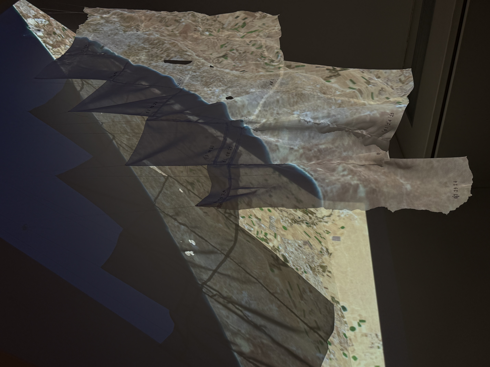
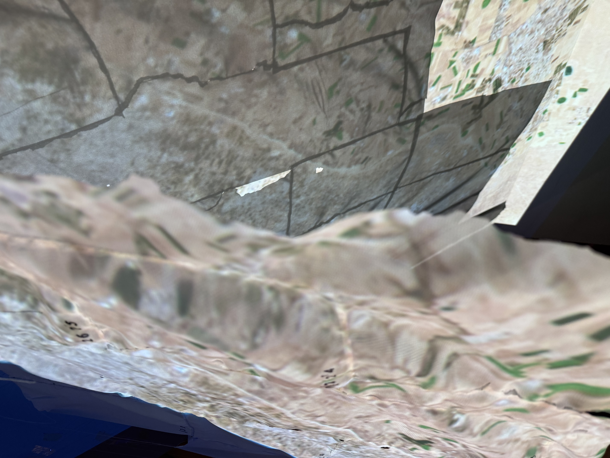
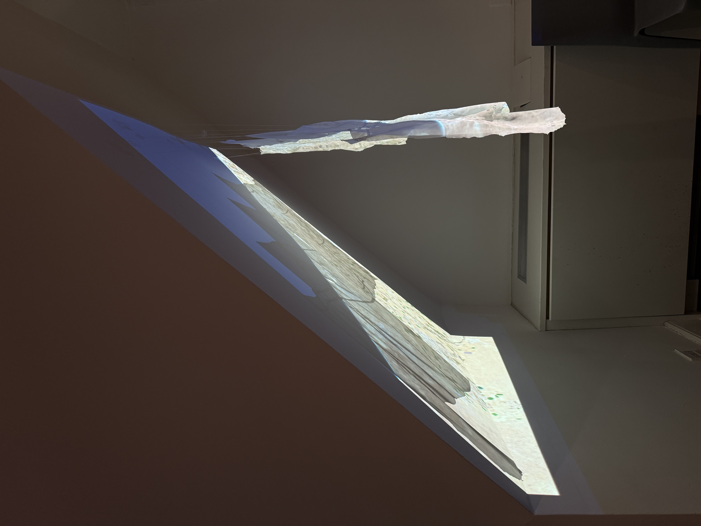
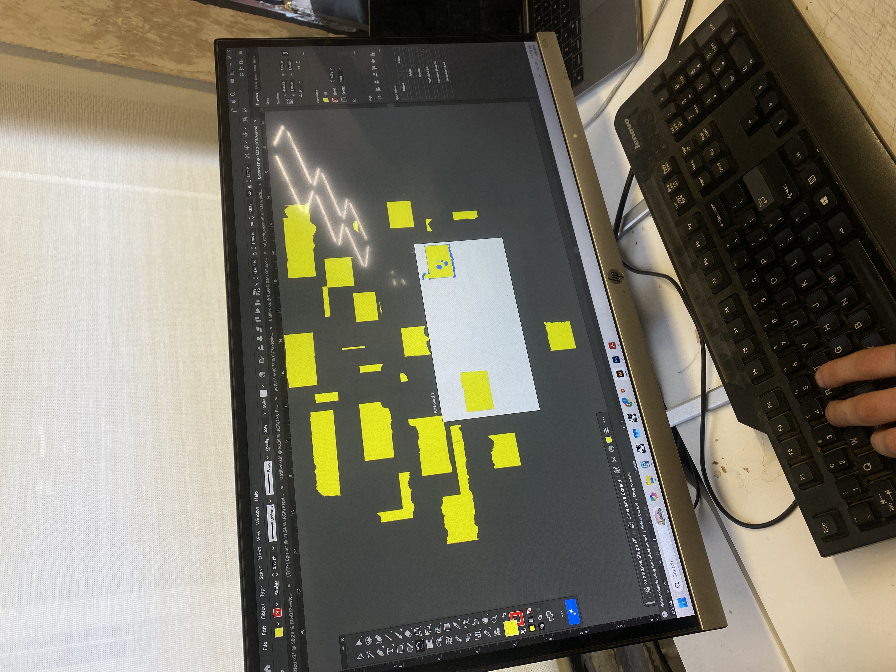
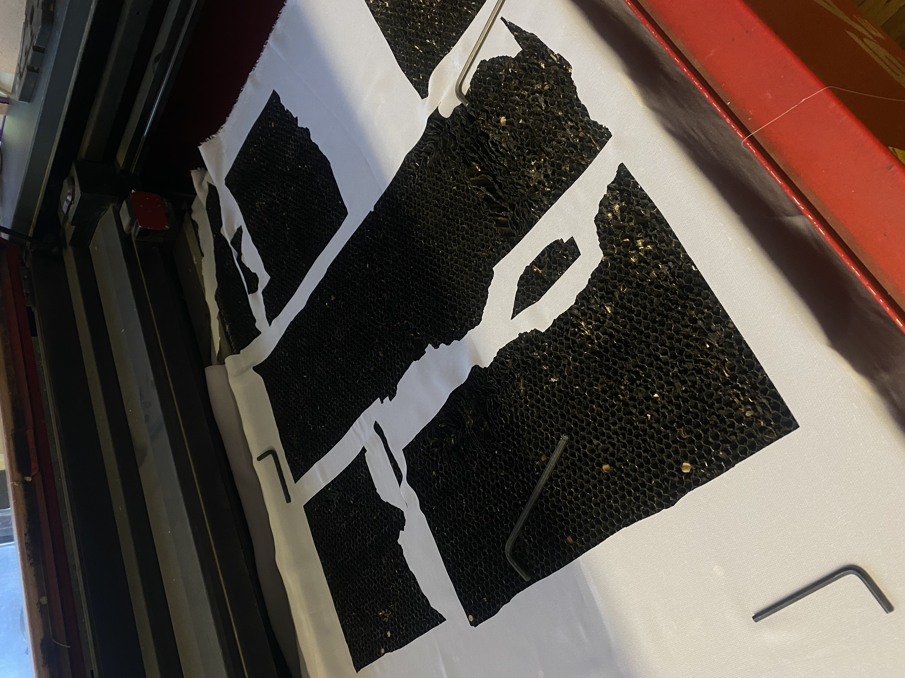
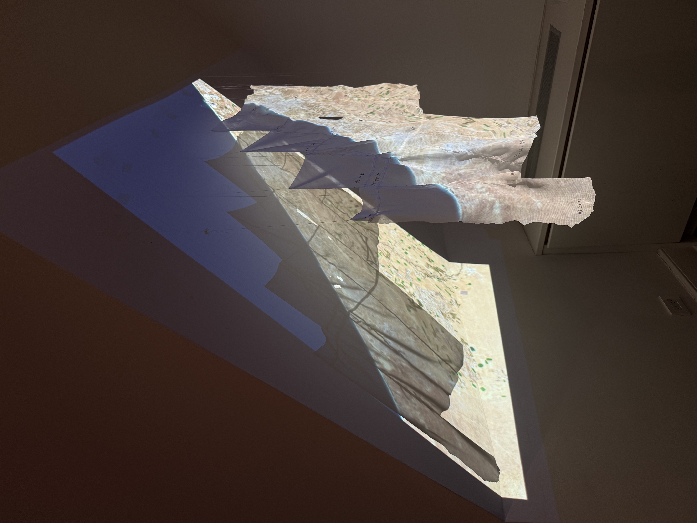

Projecting Topographies (II)
This piece visualizes satellite composites and metadata stitched together in the ArcGIS basemap of the Gaza area. This basemap, made up of imagery from Vantor, is some of the highest resolution imagery I have access to for free. However, it is composited of tiles and scales from very different time periods, made noticeable in this context by Israel’s intensive demolition and razing of land over the past three years of genocide. This project seeks to visualize these disparate tiles and temporalities which are physically stitched together, emphasizing the fabrication and human construction of satellite imagery and its role in mediating what we can and how we know it.
To make this installation I scraped the satellite footprint shapefiles and metadata from ArcGIS and exported the footprint files as an SVG file. I then laser cut these shapes into a light synthetic fabric before sewing them back together and stamping the date of each tile in black ink.




